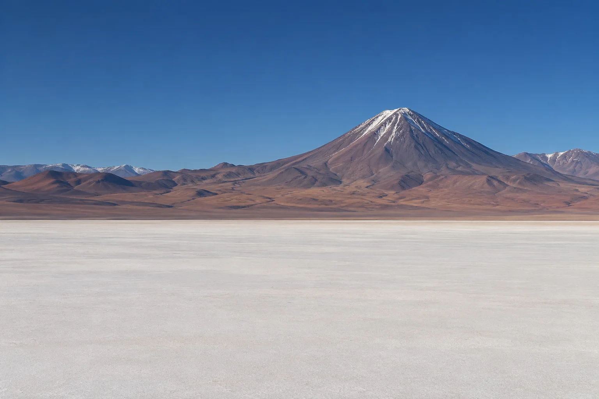
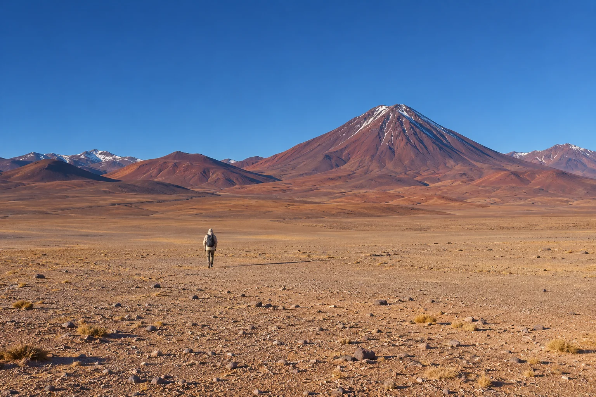
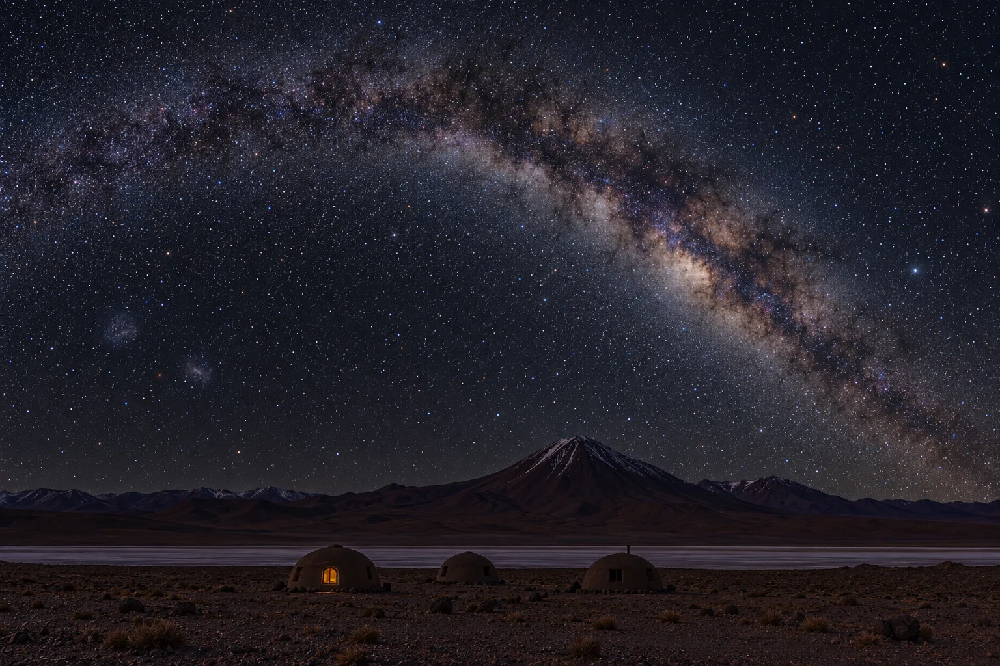

Atacama: private astronomy expeditions with Cielo Alto
Above four thousand metres the air holds less than a millimetre of water, the nearest streetlight is ninety kilometres away, and on a moonless night the Milky Way is bright enough to throw your shadow on the salt.
Three pavilions and one observatory, set forty steps apart on the edge of the salt.
Six nights, each one planned backwards from astronomical dawn.
Luxury here is logistics: oxygen, water, darkness and the people who guard all three.

We travel in the dark of the moon and close the camp when it is full.
| Departure, six nights | Moon | True dark, middle night | Rate per guest | Availability |
|---|---|---|---|---|
| Departure dates are computed from the moon in your browser; enable scripts to see them. | ||||
Sun and moon times, darkness and new-moon dates on this page are computed in your browser from today’s date with low-precision solar and lunar formulae (after Meeus and the Astronomical Almanac). Twilight and moonrise are good to a few minutes and the moment of new moon to a few hours; the office confirms exact times with every booking. Astro dusk and dawn mark the sun 18 degrees below the horizon. All times are camp time, Chile continental.

The same horizon, after astronomical dusk.
[ SKY 21.9 MAG/ARCSEC² ]